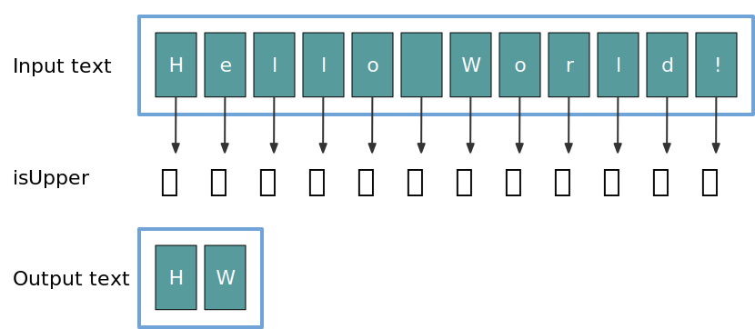
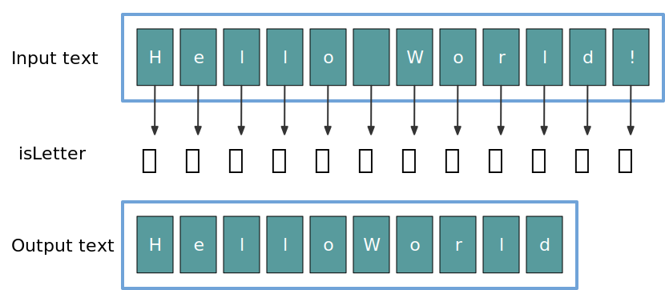
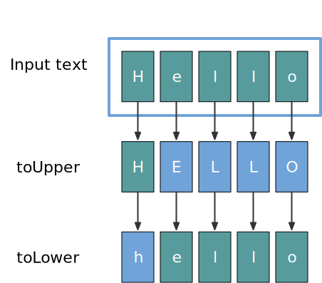
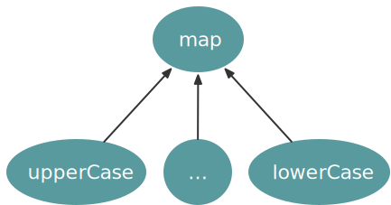

background-image: url(../img/fp-tower/website-background.svg) class: center, middle, white .title[Function as inputs] --- # Function as inputs <br> ```scala def filter( text : String, predicate: Char => Boolean ): String = ... ``` --- # Function as inputs <br> .thirty-seven-left[ <br> <br> ```scala filter( "Hello World!", (c: Char) => c.isUpper ) // res0: String = "HW" ``` ] .fifty-seven-right[  ] --- # Function as inputs <br> .thirty-seven-left[ <br> <br> ```scala filter( "Hello World!", (c: Char) => c.isLetter ) // res1: String = "HelloWorld" ``` ] .fifty-seven-right[  ] --- .h1[# Reduce code duplication] <br> .forty-seven-left[ ```scala def upperCase(text: String): String = { val characters = text.toArray for (i <- 0 until text.length) { characters(i) = characters(i).toUpper } new String(characters) } ``` ```scala upperCase("Hello") // res2: String = "HELLO" ``` ] .forty-seven-right[ ```scala def lowerCase(text: String): String = { val characters = text.toArray for (i <- 0 until text.length) { characters(i) = characters(i).toLower } new String(characters) } ``` ```scala lowerCase("Hello") // res3: String = "hello" ``` ] --- # Capture pattern .fifty-seven-left[ <br> ```scala def map(text: String, update: Char => Char): String = { val characters = text.toArray for (i <- 0 until text.length) { characters(i) = update(characters(i)) } new String(characters) } ``` ```scala def upperCase(text: String): String = map(text, c => c.toUpper) def lowerCase(text: String): String = map(text, c => c.toLower) ``` ] .thirty-seven-right[  ] --- # Capture pattern <br> .fifty-seven-left[ ```scala def map(text: String, update: Char => Char): String = { val characters = text.toArray for (i <- 0 until text.length) { characters(i) = update(characters(i)) } new String(characters) } ``` ```scala def upperCase(text: String): String = map(text, c => c.toUpper) def lowerCase(text: String): String = map(text, c => c.toLower) ``` ] .thirty-seven-right[  ] --- # Property based testing <br> .fifty-seven-left[ ```scala test("map does not modify the size of a text") { forAll(( text : String, update: Char => Char ) => val outputText = map(text, update) outputText.length == text.length ) } ``` ] .thirty-seven-right[ ] --- background-image: url(../img/foundation/higher-order-function-2.svg) # Hierarchy of functions --- background-image: url(../img/foundation/file-processing-1.svg) # File processing --- background-image: url(../img/foundation/file-processing-2.svg) # File processing --- background-image: url(../img/foundation/file-processing-fail.svg) # File processing --- background-image: url(../img/foundation/file-processing-fail-safe.svg) # File processing --- # Write tricky code once <br> ```scala import scala.io.Source def usingFile(fileName: String, processing: Iterator[String] => Int): Int = { val source = Source.fromResource(fileName) try { processing(source.getLines()) } finally { source.close() } } ``` -- .forty-seven-left[ ```scala val countLines: Iterator[String] => Int = lines => lines.size ``` ] .forty-seven-right[ ```scala val countWords: Iterator[String] => Int = lines => ... ``` ] --- # Write tricky code once <br> ```scala import scala.io.Source def usingFile(fileName: String, processing: Iterator[String] => Int): Int = { val source = Source.fromResource(fileName) try { processing(source.getLines()) } finally { source.close() } } ``` .forty-seven-left[ ```scala usingFile("50-word-count.txt", countLines) // res7: Int = 2 ``` ] .forty-seven-right[ ```scala usingFile("50-word-count.txt", countWords) // res8: Int = 50 ``` ] --- # Summary <br> .large[ * Higher order function * Reduce code duplication * Improve code quality ]